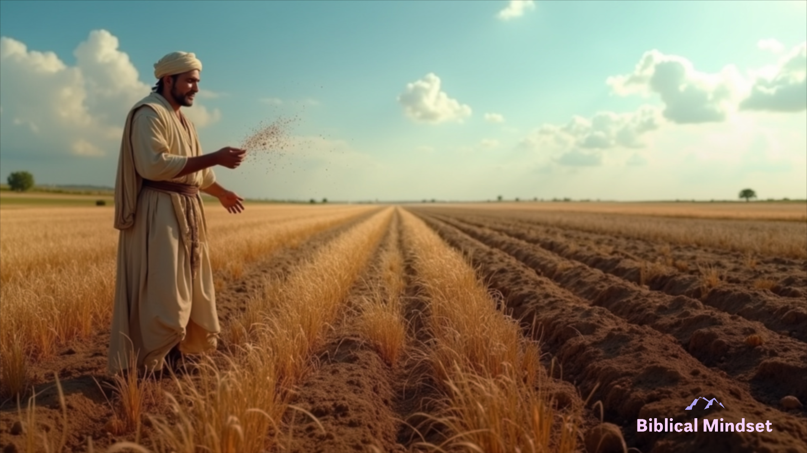

The Parables of Jesus: Timeless Lessons for Today
Published on: March 20, 2025

The Parable of the Sower
In the Parable of the Sower (Matthew 13:1-23), Jesus tells the story of a farmer who sows seeds on different types of soil. Each type of soil represents a different response to the Word of God:
- Hard Soil: The Word is heard but not understood, and the enemy snatches it away.
- Rocky Soil: The Word is received with joy, but it doesn't take root, and the person falls away when trials come.
- Thorny Soil: The Word is choked by the worries of life and the deceitfulness of wealth.
- Good Soil: The Word is understood and produces a fruitful harvest.
This parable reminds us to cultivate a heart that is receptive to God's Word, allowing it to take root and transform our lives.
The Parable of the Prodigal Son

The Parable of the Prodigal Son (Luke 15:11-32) tells the story of a young man who demands his inheritance, squanders it in reckless living, and eventually returns home in repentance. His father welcomes him with open arms, symbolizing God's unconditional love and forgiveness.
Key lessons from this parable include:
- Repentance: No matter how far we stray, God is always ready to forgive us when we turn back to Him.
- Grace: God's love is not based on our performance but on His unchanging character.
- Jealousy: The older brother's resentment reminds us to avoid comparing ourselves to others and to rejoice in God's mercy.
The Parable of the Good Samaritan

In the Parable of the Good Samaritan (Luke 10:25-37), Jesus tells the story of a man who is beaten and left for dead on the side of the road. While religious leaders pass him by, a Samaritan—a despised outsider—stops to help him, demonstrating true compassion.
This parable teaches us:
- Compassion: True love for our neighbor requires action, not just words.
- Breaking Barriers: The Samaritan's actions challenge us to love beyond cultural, racial, and social boundaries.
- Mercy: Jesus calls us to show mercy to everyone, even those who are different from us.
Conclusion
The parables of Jesus are timeless because they address the human heart and its relationship with God. Whether it's the condition of our hearts (the Sower), the depth of God's forgiveness (the Prodigal Son), or the call to love our neighbors (the Good Samaritan), these stories challenge us to live out our faith in practical ways. Let us reflect on these parables and allow them to shape our mindset and actions.